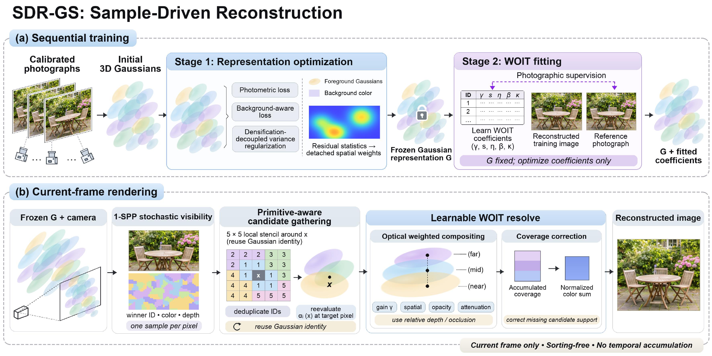
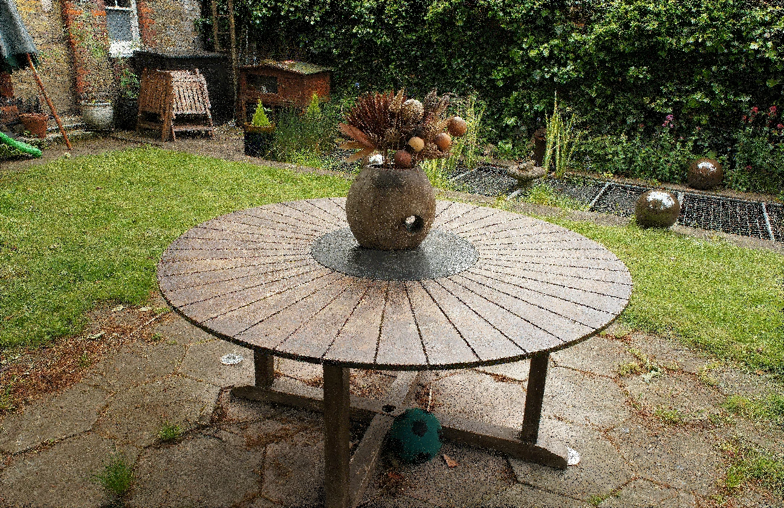
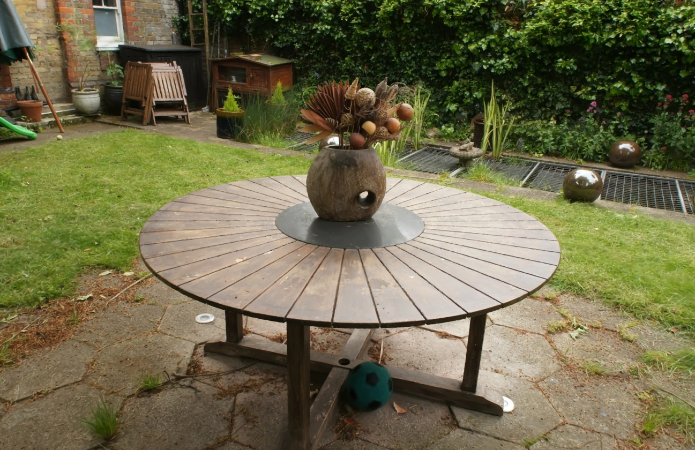
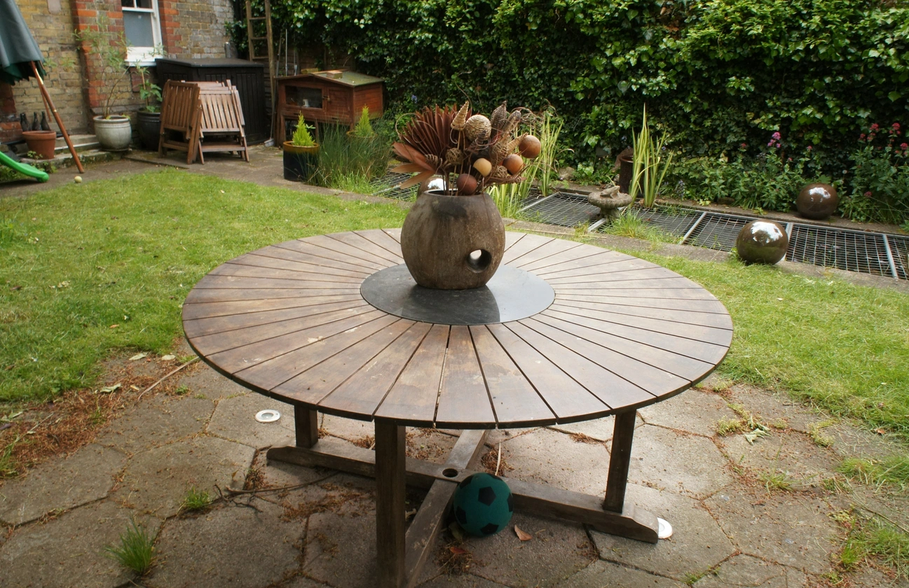
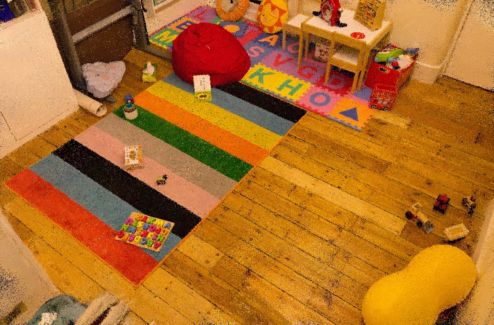

Drag either divider to compare StochasticSplats, SteadySplats, and Ours along the same camera path. All three use one fresh sample per pixel without temporal image accumulation. Ours includes WOIT reconstruction.
Abstract
Stochastic transparency avoids expensive depth sorting, but its images are noisy when only a few samples are available. SDR-GS reconstructs high-quality images from one fresh sample per pixel, with no temporal accumulation.
We first train Gaussians to produce more consistent samples while controlling scene growth. We then keep the representation fixed and learn a weighted order-independent transparency (WOIT) operator. Each sample tells us which Gaussian was seen: neighboring pixels can reuse that identity, reevaluate its contribution, and reconstruct a better image. The paper reports a 7.3× speedup over the stochastic baseline at matched reconstruction quality.
From reliable samples to a cleaner image
Two training stages. One fresh stochastic sample per pixel.

Train for reliable single-sample rendering
A good average image can still hide noisy samples. We penalize background misses, reduce color inconsistency, and separate parameter optimization from the signal that adds new Gaussians. An adaptive controller balances noise reduction and detail without excessive scene growth.
One sample. More useful information.
See how representation optimization and WOIT change a single-sample image. Explore seven scenes, with the same camera view shared by all three methods in each comparison.


StochasticSplatsSteadySplatsOurs
Drag either divider to inspect the three methods in the order StochasticSplats, SteadySplats, Ours. These are matched-view, raw 1-SPP outputs for the first two methods; Ours includes current-frame WOIT reconstruction. No method uses temporal image accumulation here.
Explore the scenes
Fixed-view accumulation and moving-camera comparisons across outdoor, indoor, Tanks and Temples, and Deep Blending scenes.
Garden
Outdoor · fixed-view accumulationThe four methods are evaluated at matched camera views as their outputs accumulate. Quality is reported against the reference photograph and alpha blending.
The videos retain the native experiment labels and measured GPU FPS. Playback speed is independent of GPU rendering throughput.
Why the training objective matters
Move through the components to see what each one addresses. The images below are raw 1-SPP results, before WOIT reconstruction.

An accurate average can still look noisy
Matching the blended image alone allows individual Gaussians to have very different colors. Choosing just one of them produces visible noise.
Numbers: five-outdoor-scene mean component ablation. Visual: the same Playroom view. These are different evaluation scopes.
Quality and efficiency
Equal-weight means across 13 scenes. Fresh sample budgets and history are reported separately.
| Method | Reconstruction | Fresh SPP | History | PSNR ↑ | SSIM ↑ | LPIPS ↓ | GS (M) | FPS ↑ |
|---|---|---|---|---|---|---|---|---|
| 3DGS (AB) | Deterministic | — | — | 27.259 | 0.833 | 0.122 | 2.496 | 105.1 |
| StochasticSplats | None | 1 | 0 | 15.338 | 0.188 | 0.942 | 2.496 | 358.7 |
| StochasticSplats | None | 4 | 0 | 20.257 | 0.397 | 0.526 | 2.496 | 89.7 |
| SteadySplats | None | 1 | 0 | 21.814 | 0.542 | 0.402 | 2.665 | 766.5 |
| SteadySplats | Resampling | 1 | 4 | 25.209 | 0.726 | 0.180 | 2.665 | 546.2 |
| Ours (raw) | None | 1 | 0 | 24.032 | 0.636 | 0.283 | 2.220 | 994.1 |
| Ours | WOIT21 | 1 | 0 | 26.085 | 0.783 | 0.170 | 2.220 | 680.6 |
Source: the main paper’s 13-scene benchmark. FPS = 1000 / mean GPU frame time. 3DGS uses CUDA; stochastic methods use OpenGL. The SteadySplats resampling reference uses four history samples after 32 same-frame warm-up iterations. Both Ours rows share the same optimized representation. The 7.3× matched-quality speedup is a separate quality–runtime comparison, not the ratio of FPS entries in this table.